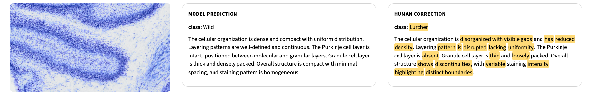
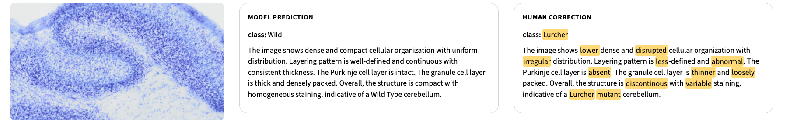
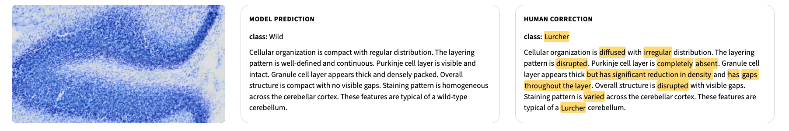
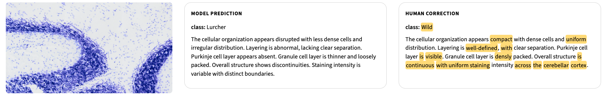
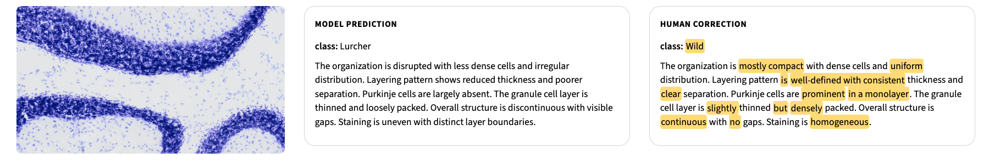

A Human-in-the-Loop Framework for Efficient Prompt Selection in Microscopy Vision-Language Models
1University of South Florida, USA
2SRC Biosciences, USA
CVPR 2026
Abstract
Deep-learning pipelines for microscopy image classification often require expensive, labor- and time-intensive expert annotation to produce high-quality ground truth for training. Recent work has shown that prompt tuning of vision-language models (VLMs) can reduce manual annotation by constructing a small prompt set of expert-verified image-caption exemplars that is reused as few-shot context to classify all remaining images at inference time. To further reduce effort, the VLM can draft captions for candidate exemplars, which experts then verify and lightly edit instead of writing text de novo. However, two practical questions remain unaddressed: (1) which unlabeled images should be prioritized for verification, and (2) how many verified exemplars are needed to reach a performance target. In this work, we address these questions by formulating prompt-set construction as a target-driven active learning problem that prioritizes which images to annotate. We study three complementary selection criteria under strict low-resource constraints with small unlabeled pools. Experiments show that our methods reach the target performance with substantially fewer expert-verified images than random selection, achieving 100% test accuracy with as few as ~20 annotated images on average. More broadly, our human-in-the-loop framework demonstrates a human-centered use of generative AI in biomedical image analysis, where experts remain actively involved in verifying and refining model output while significantly reducing annotation cost.
Qualitative Examples





BibTeX
@inproceedings{kandiyana2026apt,
title={A Human-in-the-Loop Framework for Efficient Prompt Selection in Microscopy Vision-Language Models},
author={Kandiyana, Abhiram and Mali, Ankur and Hall, Lawrence O. and Mouton, Peter R. and Goldgof, Dmitry},
booktitle={Proceedings of the IEEE/CVF Conference on Computer Vision and Pattern Recognition},
pages={6229-6238},
year={2026}
}